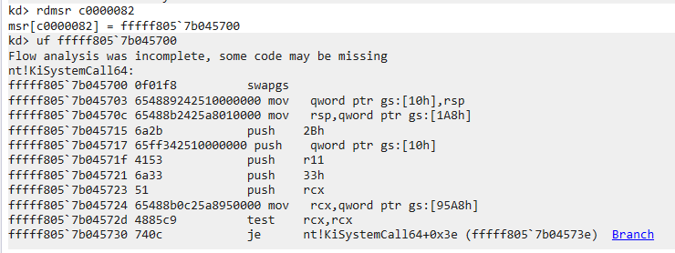
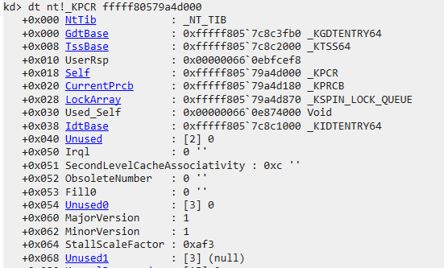
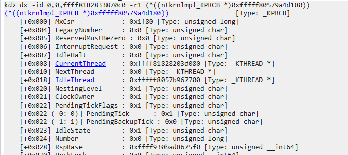
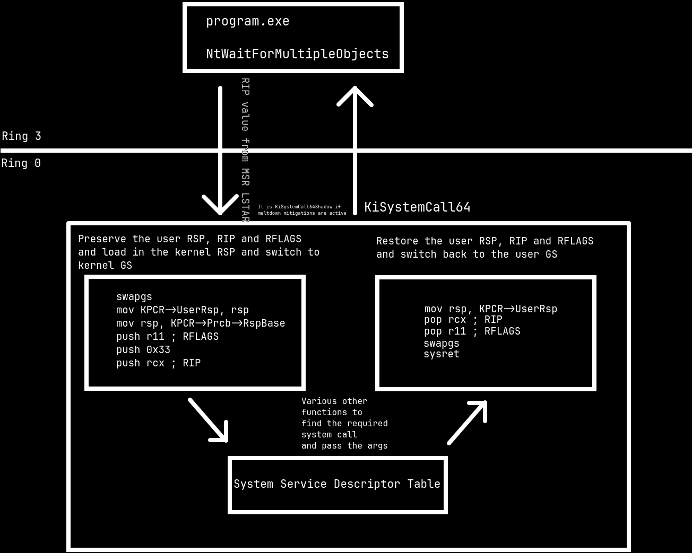
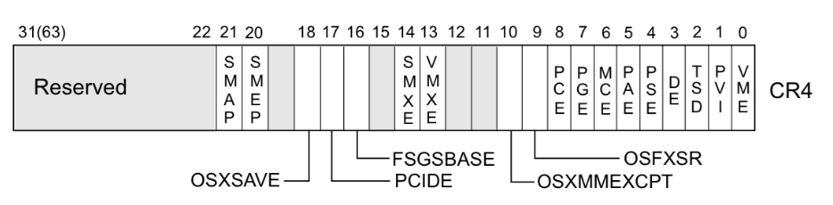
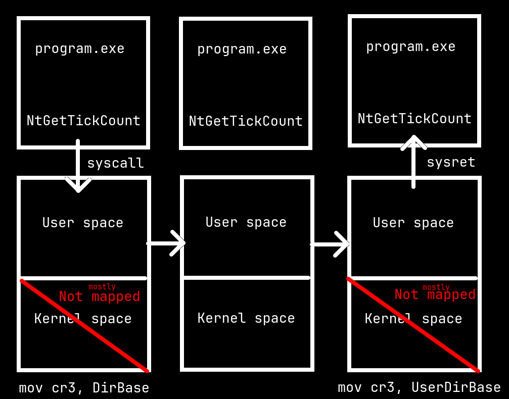
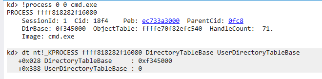
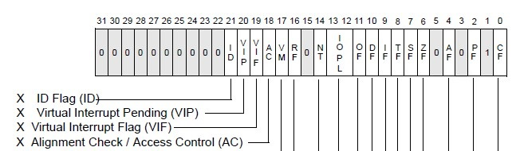

In my previous blog post I showed a signed WinRing0 driver and wrote a PoC exploit that scanned the entire system's memory to look for a system process, steal its token and give it to our running process. This was okay but there's an even better vector to exploit this driver. The vector being the driver exposing reads and writes to the CPU's MSR.
The MSR in x86 is used for debugging, performance tracking and for enabling and setting up some CPU features.
One of these features is the SYSCALL instruction. The MSR register 0xc0000082 holds the address for the syscall handler when the SYSCALL instructions is executed.
Since the driver allows me to read and write to the MSR I can point it to my own handler where it would run my code as Ring 0!
Fortunately IDontCode has done similar work before which was VERY helpful. Thank you so much!!
The SYSCALL instruction is how a system call is made on most x86_64 operating systems.
When the SYSCALL instruction is executed the processor switches to kernel mode and loads IA32_LSTAR value into RIP.
This register holds the pointer to the system call handler and it is set up by the OS when initializing the CPUs.
The CPU stores the previous instruction pointer in RCX and RFLAGS in R11.
It masks the RFLAGS using the value in the IA32_FMASK register.
However SYSCALL does not preserve the RSP, that is left to the OS to handle.

KiSystemCall64 saves the user RSP and loads the kernel RSP

The KPCR holds the user RSP

The KPRCB holds the kernel RSP
Through the disassembly you can see how Windows first preserves the user RSP and then loads in the kernel RSP to be used.
Windows swaps out the GS value for the KPCR so it can access certain CPU specific variables.
Under user mode the GS points to the TEB.

Flow chart of what Windows does when a system call is made
So we can just write a syscall handler and then modify the IA32_LSTAR to point to our own handler right?
Unfortunately things are usually not that straightforward.
We have to bypass some security mechanisms.
SMEP is a feature introduced in most new x86_64 CPUs starting from Intel Ivy Bridge and AMD Excavator. It prevents the CPU running in kernel mode from executing code in user space memory. SMEP is enabled by setting bit 20 of the CR4 register to 1. Windows has this enabled since Windows 8 onwards.
SMAP is similar to SMEP except it prevents the CPU running in kernel mode to access data in user space memory. SMAP is enabled by setting bit 21 of the CR4 register to 1. However this was recently introduced from Windows 10 build 19H1 onwards.

CR4 register bits
It is a mitigation for the meltdown vulnerability. It works by isolating userspace and kernel space much more. Each process has two page tables, user side and kernel side. The user side page table has a minimal section of the kernel mapped. The mapped kernel section contains code only for interrupt handling, dispatching system calls, etc.
Both the page tables have the entire user space memory mapped. When a system call is made Windows switches to the kernel side page table and after it is done it will switch back to the user page table. This is done so any data in kernel space can not be accessed via any means.

Diagram showing how KVAS switches out the page tables used
However on my system this was not enabled by default and looking around I found out my CPU did not have the vulnerability so I am guessing Windows did not enable it? It makes sense since KVAS does have a performance overhead. Either way this made the exploit easier since now I did not have to deal with KVAS now and I wanted to be done with this quickly. It was worth mentioning since if you are running this exploit on an older CPU KVAS can prevent it from working successfully.

There are two variables for each page table however since KVAS is disabled only DirectoryTableBase is set
We can bypass these security mechanisms put in place by simply disabling them.
ROP is a technique which abuses how function calls are made and returned on CPU architectures with stack based returns that is where the instruction pointer is pushed and popped off the stack such as x86_64.
ROP involves searching gadgets which are functions ending with RET and building a chain of these gadgets to achieve a particular goal.
In this case we want to disable SMEP and jump to our syscall handler.
There are various tools for finding these gadgets in a program binary.
I simply ran rp++ on ntoskrnl.exe.
I needed gadgets for writing to the CR4 register, popping the value to the register which is written to the CR4 register and SYSRET.
Remember how SYSCALL leaves the OS to handle switching stacks?
This means we can simply set up the ROP chain on our user stack and then SYSCALL and the system will happily perform the ROP chain since it did not switch out the stack for the kernel one.
The ROP chain setup here is the same as the one in msrexec.
We set the IA32_LSTAR to point to our POP RCX gadget. We set up the stack in the following manner.
+----------------------------------+
| CR4 register value with SMEP off |
------------------------------------
| MOV CR4, RCX Gadget |
------------------------------------
| Syscall Handler |
------------------------------------
| POP RCX Gadget |
------------------------------------
| Original CR4 register value |
------------------------------------
| MOV CR4, RCX Gadget |
------------------------------------
| POP RCX Gadget |
------------------------------------
| End of the function |
------------------------------------
| SYSRET Gadget |
+----------------------------------+
Since RCX is lost we have to compensate for that by pushing the end of the function's address on the stack and popping it before the SYSRET.
The value of CR4 in the exploit is hard coded but it is possible to guess it from userspace.
For bypassing SMAP simply set the AC bit in RFLAGS to 1.
This can be set using the STAC instruction however the instruction requires the processor to be running in kernel mode.
However thanks to msrexec I learnt that the bit can be set from user mode.
The system call flag mask does not check for the AC bit thus one can simply set the bit to 1 and disable SMAP temporarily.

The AC flag can be cleared from userspace and it will be preserved in kernel mode as well
-> The ROP chain first loads in the value of CR4 with SMEP disabled into RCX.
-> It then loads the value in RCX to CR4 effectively disabling SMEP.
-> It jumps to the syscall handler setup in user space memory.
-> After that it loads the original value of CR4 into RCX and writes that into CR4.
-> Finally it loads in the address for the end of the function into RCX. This is done since the MOV CR4 gadget makes use of the RCX register and the original value of RCX is lost.
-> Finally it SYSRETs back into user space.
The system call handler is extremely simple.
First SWAPGS is called to switch to the kernel's GS which contains the KPCR.
The KPCR contains information about the current CPU.
We are interested in the KPRCB which contains CurrentThread.
We can find the parent process from this and search the process list for System and write in the System token into our process escalating our privileges.
Finally we restore the original system call handler, SWAPGS to switch to the user GS and return.
The ROP chain then finally returns back to user space.
Since this exploit sets up the stack in a very specific manner if another thread comes along and makes a system call this can very well screw up the system. To avoid this the process and thread priority is set to the highest possible value and once the exploit is complete it is restored back.
This was tested on a Windows 11 machine fully up to date (as of 15/8/2024 the time when the exploit was written). You can find the final exploit here.
I was able to apply my osdev knowledge to understand the vector and exploit it. If you think any corrections have to be made in diagrams or explanations then feel free to reach out to me. Once again, Thank you so much IDontCode and the other folks who helped him out for your amazing work!!